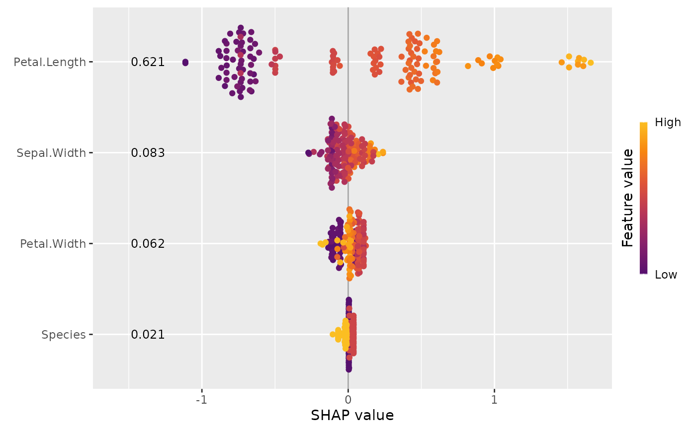
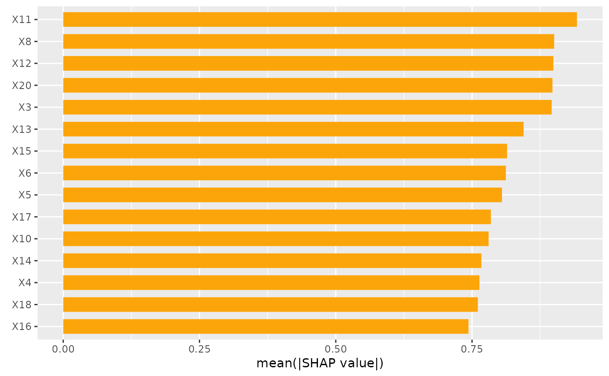
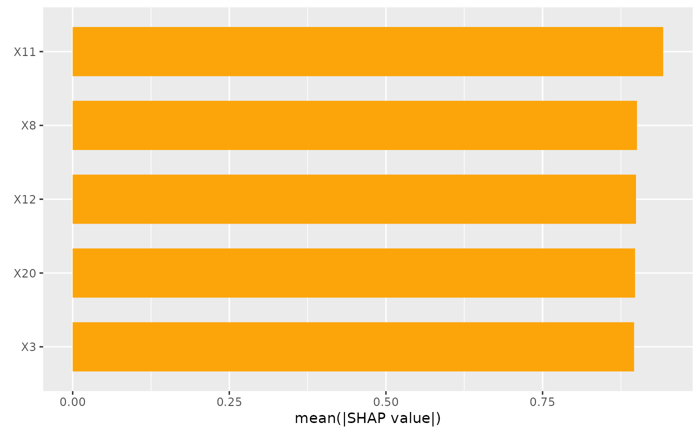

This function provides two types of SHAP importance plots: a bar plot
and a beeswarm plot (sometimes called "SHAP summary plot").
The bar plot shows SHAP feature importances, calculated as the average absolute SHAP
value per feature.
The beeswarm plot displays SHAP values per feature, using min-max
scaled feature values on the color axis. Non-numeric features are transformed
to numeric by calling data.matrix() first.
For both types of plots, the features are sorted in decreasing
order of importance. The two types of plots can also be combined.
sv_importance(object, ...)
# S3 method for default
sv_importance(object, ...)
# S3 method for shapviz
sv_importance(
object,
kind = c("bar", "beeswarm", "both", "no"),
max_display = 15L,
fill = "#fca50a",
bar_width = 2/3,
bee_width = 0.4,
bee_adjust = 0.5,
viridis_args = getOption("shapviz.viridis_args"),
color_bar_title = "Feature value",
show_numbers = FALSE,
format_fun = format_max,
number_size = 3.2,
...
)An object of class "shapviz".
Arguments passed to geom_bar() (if kind = "bar") or
to geom_point() otherwise.
For instance, passing alpha = 0.2 will produce semi-transparent beeswarms,
and setting size = 3 will produce larger dots.
Should a "bar" plot (the default), a "beeswarm" plot, or "both" be shown? Set to "no" in order to suppress plotting. In that case, the sorted SHAP feature importances of all variables are returned.
Maximum number of features (with highest importance) to plot.
Set to Inf to show all features. Has no effect if kind = "no".
Color used to fill the bars (only used if bars are shown).
Relative width of the bars (only used if bars are shown).
Relative width of the beeswarms (only used if beeswarm shown).
Relative bandwidth adjustment factor used in estimating the density of the beeswarms (only used if beeswarm shown).
List of viridis color scale arguments used to control the
coloring of the beeswarm plot, see ?ggplot2::scale_color_viridis_c().
The default points to the global option shapviz.viridis_args, which
corresponds to list(begin = 0.25, end = 0.85, option = "inferno").
These values are passed to ggplot2::scale_color_viridis_c().
For example, to switch to a standard viridis scale, you can either change the default
with options(shapviz.viridis_args = NULL) or set viridis_args = NULL.
Title of color bar of the beeswarm plot.
Set to NULL to hide the color bar altogether.
Should SHAP feature importances be printed?
Default is FALSE.
Function used to format SHAP feature importances
(only if show_numbers = TRUE). To change to scientific notation, use e.g.
function(x) = prettyNum(x, scientific = TRUE).
Text size of the numbers (if show_numbers = TRUE).
A "ggplot" object representing an importance plot, or - if
kind = "no" - a named numeric vector of sorted SHAP feature importances.
sv_importance(default): Default method.
sv_importance(shapviz): SHAP importance plot for an object of class "shapviz".
X_train <- data.matrix(iris[, -1])
dtrain <- xgboost::xgb.DMatrix(X_train, label = iris[, 1])
fit <- xgboost::xgb.train(data = dtrain, nrounds = 50, nthread = 1)
x <- shapviz(fit, X_pred = X_train)
sv_importance(x)
sv_importance(x, kind = "beeswarm", show_numbers = TRUE)

sv_importance(x, kind = "no")
#> Petal.Length Sepal.Width Petal.Width Species
#> 0.68917066 0.12802841 0.11464860 0.02100944
X <- data.frame(matrix(rnorm(1000), ncol = 20))
S <- as.matrix(X)
x2 <- shapviz(S, X)
sv_importance(x2)

sv_importance(x2, max_display = 5)
